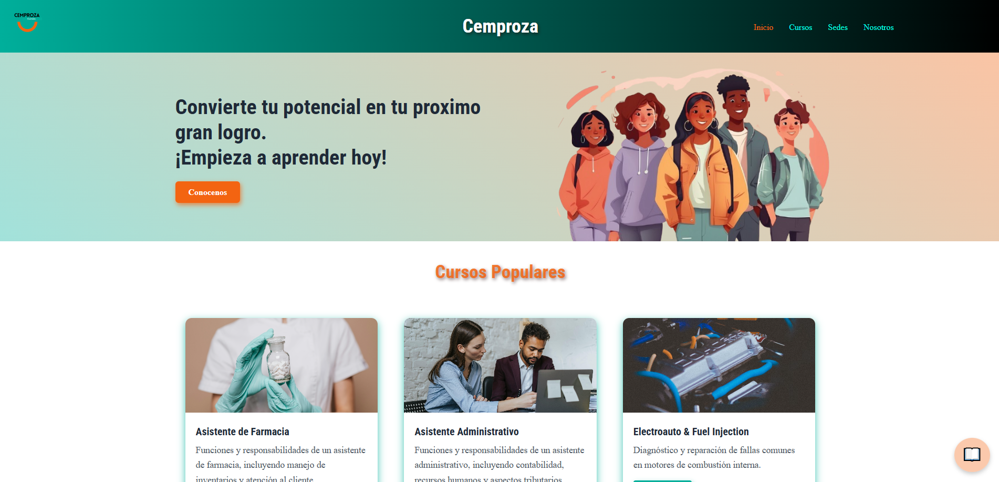
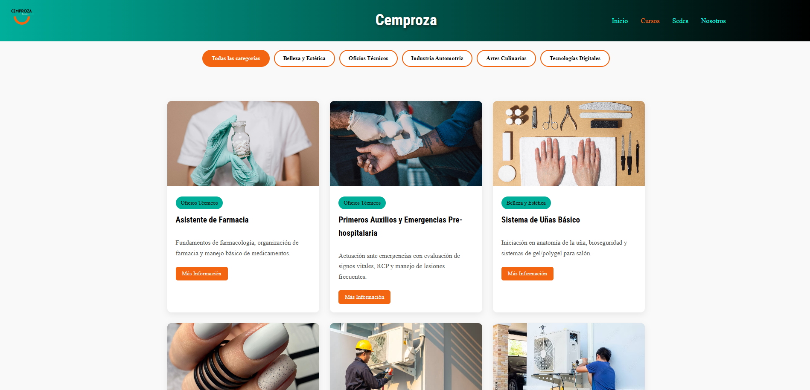
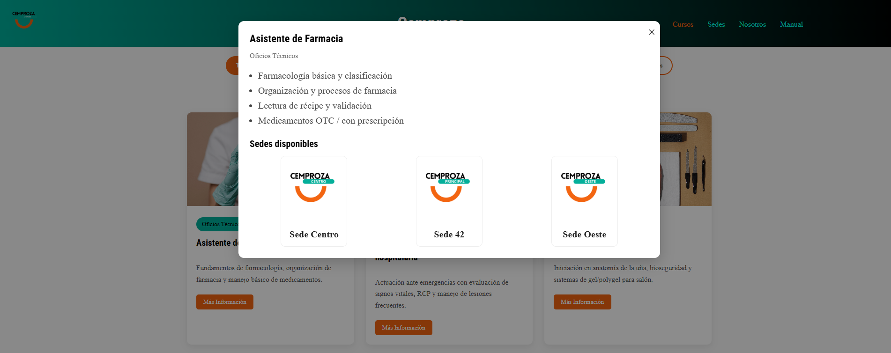
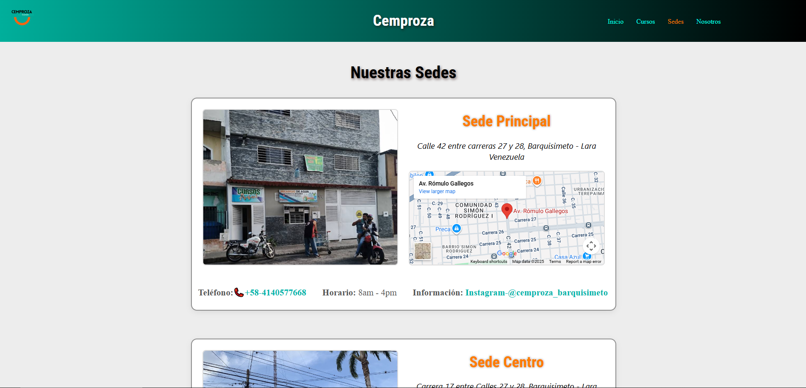
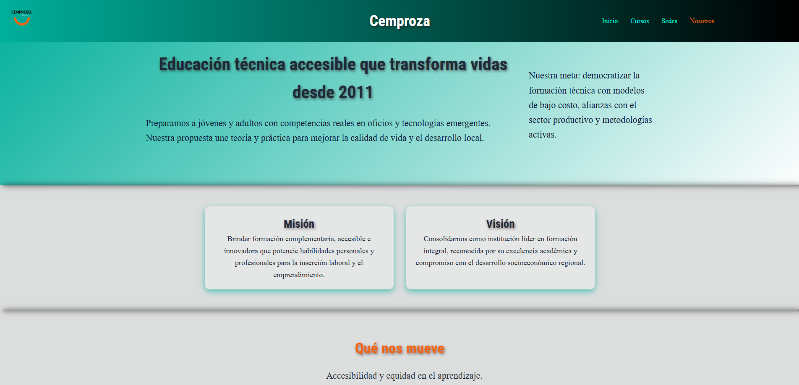

Manual de Usuario del Sitio Web
El sitio web informativo de CEMPROZA fue diseñado para ser intuitivo, accesible y funcional, permitiendo a los usuarios navegar fácilmente desde cualquier dispositivo. A continuación, se describe el funcionamiento de cada sección del portal.
Principal

- Bienvenida Institucional: Muestra un mensaje de introducción que presenta a CEMPROZA como una empresa educativa.
- Cursos Populares: Se destacan los 8 cursos más demandados, permitiendo visualizar rápidamente las opciones más relevantes.
- Categorías Formativas: 5 botones interactivos agrupan los cursos en áreas específicas, redirigiendo a la sección de cursos en la categoría seleccionada (Belleza, Oficios Técnicos, Industria, Arte Culinario, Tecnologías).
- Beneficios: Se informa sobre los certificados que se entregan, las habilidades adquiridas y el valor profesional de cada formación.
- Personal Docente: Incluye una breve reseña del equipo de instructores, destacando su experiencia.
Cursos

- Listado de Cursos por Categoría: Permite explorar todos los cursos disponibles, organizados por las cinco áreas formativas.
- Tarjetas Informativas: Cada curso se muestra en una tarjeta con su Nombre, Duración en horas y Breve descripción.
- Ventana de Información Ampliada: Al hacer clic en “Más información”, se despliega una ventana con la descripción completa, la Sede donde se imparte y un botón para contacto directo vía WhatsApp.

Sedes

- Identificación de Sedes: Muestra imágenes reales de las tres sedes: Principal, Centro y Oeste.
- Ubicación y Contacto: Cada sede incluye dirección, mapa interactivo, horario de atención, enlace directo a WhatsApp y el Instagram institucional.
Nosotros

- Información Institucional: Contiene la Reseña histórica (desde 2011), la Misión y la Visión de CEMPROZA.
- Compromiso: Se destaca el compromiso social de la institución con la formación de ciudadanos productivos.
- Imágenes Referentes: Se incluyen imágenes que se relacionan y apoyan el contenido mostrado.